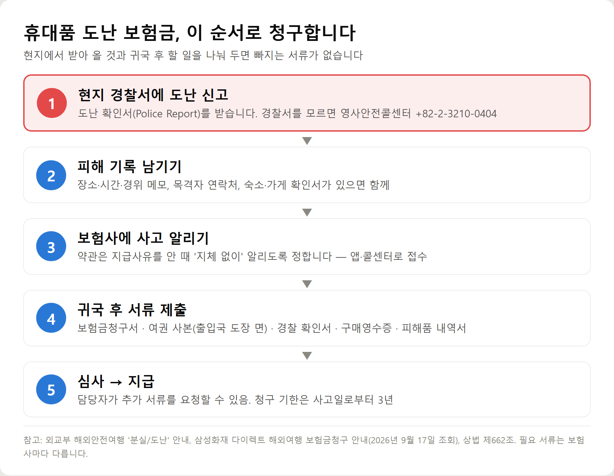
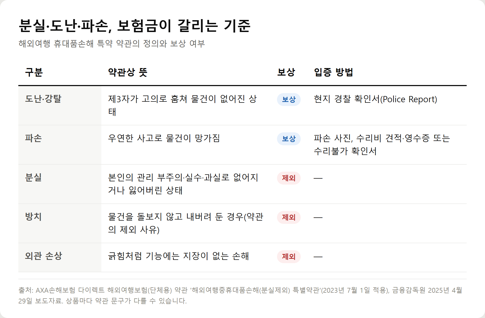
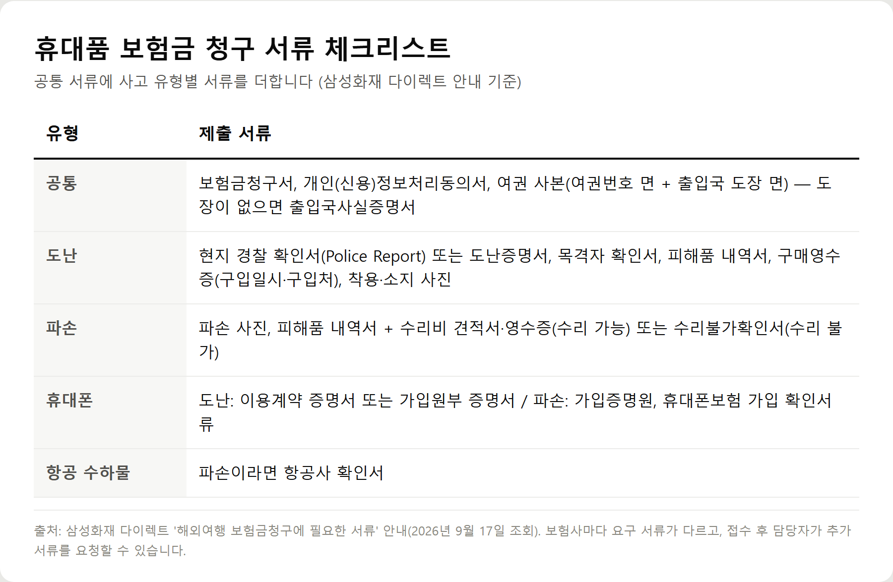
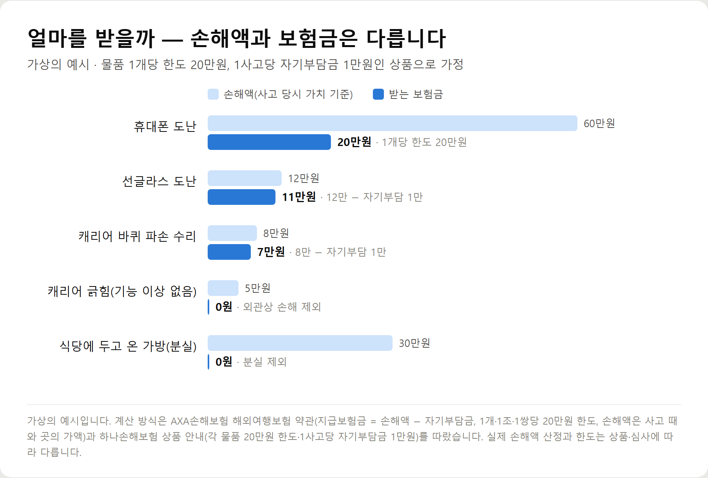

<meta charset="utf-8">
<title>여행자보험 휴대품 도난 청구 방법 — 서류·한도·거절 사유 — 나의 투자 그리고 행복한 여행</title>
<meta name="description" content="해외여행 중 휴대폰·가방을 도난당했을 때 여행자보험 휴대품 보험금 청구 순서, 도난·파손별 필요 서류, 1개당 한도와 자기부담금 계산, 분실 등 거절 사유를 약관과 보험사 안내로 정리했습니다.">
<meta name="viewport" content="width=device-width, initial-scale=1">
<link rel="canonical" href="https://danielmoon82.github.io/moon/posts/travel-insurance-theft-claim-2026-09-17.html">
<link rel="preconnect" href="https://fonts.googleapis.com">
<link rel="preconnect" href="https://fonts.gstatic.com" crossorigin>
<link rel="stylesheet" href="https://fonts.googleapis.com/css2?family=Hahmlet:wght@400;600;800&family=IBM+Plex+Mono:wght@400;500&family=IBM+Plex+Sans+KR:wght@300;400;500;600&display=swap">

<style>
  :root{
    --paper:#F2EEE6;--surface:#FAF8F3;--surface-2:#E7E1D5;
    --ink:#191510;--ink-2:#4A4235;--ink-3:#7D7364;
    --line:#D6CEBF;--line-soft:#E4DDD0;--accent:#B06A15;--accent-bright:#C2761A;
    --up:#E5484D;--down:#3B82F6;
    --f-display:"Hahmlet",'Nanum Myeongjo',"Apple SD Gothic Neo",serif;
    --f-body:"IBM Plex Sans KR","Apple SD Gothic Neo","Malgun Gothic",sans-serif;
    --f-mono:"IBM Plex Mono","SFMono-Regular",Consolas,monospace;
    --pad:clamp(20px,5vw,64px);
  }
  @media (prefers-color-scheme:dark){
    :root:not([data-theme="light"]){
      --paper:#0B1120;--surface:#121A2C;--surface-2:#1A2439;
      --ink:#E9EEF7;--ink-2:#A9B5C9;--ink-3:#72809A;
      --line:#26314A;--line-soft:#1D2739;--accent:#E8A33D;--accent-bright:#F0B45C;
    }
  }
  *{box-sizing:border-box;}
  body{margin:0;background:var(--paper);color:var(--ink);font-family:var(--f-body);
    font-weight:300;font-size:1rem;line-height:1.75;-webkit-font-smoothing:antialiased;}
  a{color:inherit;}
  img{max-width:100%;height:auto;}
  .wrap{max-width:760px;margin:0 auto;padding-inline:var(--pad);}
  .nav{position:sticky;top:0;z-index:20;background:color-mix(in srgb,var(--paper) 88%,transparent);
    backdrop-filter:saturate(180%) blur(12px);border-bottom:1px solid var(--line);}
  .nav-in{display:flex;align-items:center;justify-content:space-between;height:58px;}
  .brand{font-family:var(--f-display);font-weight:600;font-size:1rem;letter-spacing:-.02em;text-decoration:none;}
  .back{font-family:var(--f-mono);font-size:.72rem;color:var(--ink-3);text-decoration:none;}
  .article{padding-block:clamp(40px,7vw,72px) clamp(56px,9vw,96px);}
  .eyebrow{font-family:var(--f-mono);font-size:.68rem;letter-spacing:.16em;text-transform:uppercase;
    color:var(--accent);margin:0 0 14px;}
  h1{font-family:var(--f-display);font-weight:800;font-size:clamp(1.6rem,4.4vw,2.3rem);
    line-height:1.3;letter-spacing:-.03em;margin:0 0 16px;}
  .byline{font-family:var(--f-mono);font-size:.72rem;color:var(--ink-3);
    padding-bottom:24px;border-bottom:1px solid var(--line);margin-bottom:32px;}
  h2{font-family:var(--f-display);font-weight:600;font-size:1.25rem;letter-spacing:-.02em;margin:42px 0 14px;}
  h3{font-family:var(--f-display);font-weight:600;font-size:1.05rem;letter-spacing:-.02em;
    margin:30px 0 10px;padding-top:14px;border-top:1px solid var(--line-soft);}
  h3 .code{font-family:var(--f-mono);font-size:.7rem;font-weight:400;color:var(--ink-3);margin-left:6px;}
  p{margin:0 0 18px;color:var(--ink-2);}
  ul.checks{margin:0 0 18px;padding-left:20px;color:var(--ink-2);}
  ul.checks li{margin-bottom:8px;font-size:.94rem;}
  table{width:100%;border-collapse:collapse;font-size:.88rem;margin-bottom:8px;}
  th{font-family:var(--f-mono);font-size:.66rem;letter-spacing:.06em;text-transform:uppercase;
    color:var(--ink-3);text-align:right;padding:8px 6px;border-bottom:1px solid var(--line);}
  th:first-child{text-align:left;}
  td{padding:10px 6px;border-bottom:1px solid var(--line-soft);color:var(--ink-2);}
  td.num{font-family:var(--f-mono);text-align:right;font-variant-numeric:tabular-nums;}
  td.up{color:var(--up);} td.down{color:var(--down);}
  .scroll{overflow-x:auto;}
  figure{margin:22px 0;}
  figure img{display:block;border-radius:3px;background:var(--surface-2);}
  figcaption{margin-top:8px;font-family:var(--f-mono);font-size:.68rem;color:var(--ink-3);text-align:center;}
  .note{margin-top:34px;padding:16px 18px;border-left:3px solid var(--accent);
    background:var(--surface);border-radius:0 3px 3px 0;}
  .note p{margin:0;font-size:.85rem;color:var(--ink-3);}
  .foot{border-top:1px solid var(--line);background:var(--surface);padding-block:30px 38px;}
  .foot p{margin:0;font-size:.8rem;color:var(--ink-3);}
</style>

<nav class="nav">
  <div class="wrap nav-in">
    <a class="brand" href="../index.html">나의 투자 그리고 행복한 여행</a>
    <a class="back" href="../index.html#stocks">← 시황으로</a>
  </div>
</nav>

<main class="wrap article">
  <p class="eyebrow">Market</p>
  <h1>해외여행보험 휴대품손해 청구 가이드 — 도난·파손 서류, 한도 계산, 거절 사유 (2026)</h1>
  <p class="byline">여행 · 2026-09-17 기준</p>

  <p><b>이 포스팅은 네이버 쇼핑 커넥트 활동의 일환으로, 판매 발생 시 수수료를 제공받습니다.</b></p>
  <p><b>이 포스팅은 쿠팡 파트너스 활동의 일환으로, 구매 시 수수료를 제공받습니다.</b></p>
  <p>한 줄 요약: 도난은 현지 경찰 확인서로 입증하고, 보험금은 '사고 당시 가치 − 자기부담금'을 물건 1개당 한도(흔히 20만원) 안에서 받으며, 분실·외관 손상은 보상되지 않습니다.</p>
  <p>약관은 AXA손해보험 해외여행보험 특별약관, 청구 서류는 삼성화재·KB손해보험 안내, 현지 대처는 외교부 해외안전여행을 기준으로 2026년 9월 17일에 확인했습니다.</p>
  <h2>해외에서 휴대품을 도난당했다면 — 여행자보험 청구 5단계</h2>
  <figure><figcaption>여행자보험 휴대품 도난 보험금 청구 5단계 — 현지 경찰 신고, 피해 기록, 보험사 통지, 귀국 후 서류 제출, 심사와 지급</figcaption></figure>
  <p><b>① 현지 경찰서에 도난 신고</b> — 도난 확인서(Police Report)나 도난증명서를 받습니다. 외교부는 경찰서 연락처나 신고 방법을 모르면 영사안전콜센터(+82-2-3210-0404)나 가까운 재외공관에 문의하라고 안내하며, 말이 통하지 않을 때는 통역 서비스도 제공합니다.</p>
  <p><b>② 피해 기록 남기기</b> — 도난 장소와 시각, 경위를 메모하고 목격자가 있으면 연락처를 받습니다. KB손해보험은 경찰 증명서 대신 호텔 확인서도 서류로 안내하니, 숙소나 가게에서 일어난 일이라면 확인서를 요청해 보세요.</p>
  <p><b>③ 보험사에 사고 알리기</b> — 약관은 보험금 지급사유가 생긴 것을 알면 '지체 없이' 보험사에 알리도록 정합니다. 앱이나 콜센터로 접수만 해 두면 필요한 서류도 미리 안내받을 수 있습니다.</p>
  <p><b>④ 귀국 후 서류 제출</b> — 보험금청구서, 여권 사본, 경찰 확인서, 구매영수증, 피해품 내역서를 앱·팩스·이메일·우편 등으로 냅니다.</p>
  <p><b>⑤ 심사와 지급</b> — 담당자가 사고 내용을 확인하고 추가 서류를 요청할 수 있습니다. 청구는 사고일로부터 3년 안에 해야 합니다(상법 제662조).</p>
  <div class="note"><p>가장 중요한 건 ①입니다. 경찰 확인서는 귀국한 뒤에는 받기 어렵고, 이 서류가 도난과 분실을 가릅니다.</p></div>
  <h2>여행자보험 분실과 도난의 차이 — 약관은 이렇게 나눕니다</h2>
  <figure><figcaption>해외여행 휴대품손해 특약의 분실·도난·파손 구분 — 약관 정의, 보상 여부, 입증 방법</figcaption></figure>
  <p>여기서 인용하는 약관은 AXA손해보험 다이렉트 해외여행보험(단체용)의 '해외여행중휴대품손해(분실제외) 특별약관'(2023년 7월 1일 적용)입니다. 보험사마다 문구는 조금씩 다르지만 구조는 비슷합니다.</p>
  <p><b>도난</b> — '제3자가 의도적 또는 고의적으로' 물건을 훔쳐 없어지거나 잃어버려진 상태.</p>
  <p><b>분실</b> — '피보험자 본인의 관리 부주의나 실수 또는 과실로' 물건이 없어지거나 잃어버린 상태.</p>
  <p>약관은 <b>분실과 방치</b>를 보상하지 않는 손해로 적어 두었습니다. 금융감독원이 공개한 분쟁사례에서도 여행 중 잃어버린 선글라스는 보상되지 않았고, 같은 여행에서 파손된 카메라는 자기부담금을 뺀 수리비가 지급됐습니다.</p>
  <p>그래서 도난인데도 경찰 확인서 없이 '없어졌다'고만 청구하면, 보험사 입장에서는 분실과 구분할 근거가 없습니다. 금융감독원은 <b>휴대품을 도난당했다면 반드시 경찰서에 신고해 도난 사실을 증명할 서류를 발급받으라</b>고 안내합니다.</p>
  <h2>여행자보험 휴대품 청구 서류 — 도난·파손·휴대폰별 체크리스트</h2>
  <figure><figcaption>여행자보험 휴대품 보험금 청구 서류 체크리스트 — 공통, 도난, 파손, 휴대폰, 항공 수하물</figcaption></figure>
  <p>삼성화재 다이렉트의 해외여행 보험금 청구 서류 안내를 기준으로 정리했습니다. 보험사마다 다르고, 접수 뒤 담당자가 추가 서류를 요청할 수 있습니다.</p>
  <div style="overflow-x:auto"><table border="1" cellpadding="6" style="border-collapse:collapse;width:100%;font-size:14px;line-height:1.5"><thead><tr><th style="background:#f3f5f8">유형</th><th style="background:#f3f5f8">제출 서류</th></tr></thead><tbody><tr><td>공통</td><td>보험금청구서, 개인(신용)정보처리동의서, 여권 사본(여권번호 면 + 출입국 도장 면). 도장이 없으면 출입국사실증명서</td></tr><tr><td>도난</td><td>현지 경찰서 확인서(Police Report) 또는 도난증명서, 목격자 확인서, 피해품 내역서, 구매영수증(구입일시·구입처 표기), 착용(소지) 사진</td></tr><tr><td>파손 — 수리 가능</td><td>파손 사진, 피해품 내역서, 수리비 견적서, 수리비 영수증</td></tr><tr><td>파손 — 수리 불가</td><td>파손 사진, 피해품 내역서, 수리불가확인서</td></tr><tr><td>휴대폰</td><td>도난: 이용계약 증명서 또는 가입원부 증명서 / 파손: 가입증명원, 휴대폰보험 가입 확인서류</td></tr><tr><td>항공 수하물 파손</td><td>항공사 확인서</td></tr></tbody></table></div>
  <p>KB손해보험도 휴대품 도난·파손에 <b>사고 경위서, 현지 경찰서 도난 신고 증명서 또는 호텔 확인서, 구매 영수증(파손이면 수리 영수증)</b>을 안내합니다.</p>
  <p>구매영수증이 없다고 바로 포기할 필요는 없습니다. 카드 결제 내역, 온라인 주문 내역, 물건을 들고 찍은 여행 사진이 소지와 가치를 보여 주는 자료가 될 수 있습니다. 무엇을 인정하는지는 보험사에 확인하세요.</p>
  <h2>휴대품 보험금은 얼마 받을까 — 한도·자기부담금 계산법</h2>
  <figure><figcaption>여행자보험 휴대품 보험금 계산 가상의 예시 — 휴대폰 도난, 선글라스 도난, 캐리어 파손, 긁힘, 분실</figcaption></figure>
  <p>약관의 계산 방식은 세 줄로 요약됩니다.</p>
  <ul class="checks">
    <li>손해액 = 손해가 생긴 <b>때와 곳에서의 물건 가치</b>(새 제품 가격이 아닙니다)</li>
    <li>보험금 = 손해액 − 1회 사고당 자기부담금</li>
    <li>물건 1개(또는 1조·1쌍)당 보험금 한도 — AXA 약관은 20만원, 하나손해보험 안내도 각 물품 20만원·자기부담금 1만원</li>
  </ul>
  <p>위 그림은 이 조건을 가정한 <b>가상의 예시</b>입니다. 사고 당시 가치 60만원으로 본 휴대폰은 한도 때문에 20만원, 12만원으로 본 선글라스는 자기부담금 1만원을 빼 11만원, 수리비 8만원이 든 캐리어 바퀴는 7만원입니다. 긁힘만 생긴 캐리어와 식당에 두고 온 가방은 0원입니다.</p>
  <p>수리할 수 있는 파손이라면 '손해 발생 직전 상태로 복원하는 데 필요한 비용'이 손해액이 됩니다. 한 쌍 중 한쪽만 망가진 경우(예: 이어폰 한쪽)는 전체 가치에 미치는 영향을 따져 정하고, 부분 수리비가 물건 가치를 넘지 않는 한 전부 손해로 보지 않습니다.</p>
  <p><b>통신사 휴대폰보험이나 다른 여행자보험에 함께 가입돼 있다면</b> 같은 위험을 보상하는 계약끼리 나눠서 지급합니다. 두 곳에서 각각 전액을 받는 구조가 아닙니다. 삼성화재 서류 목록에 휴대폰보험 가입 확인서류가 들어 있는 이유입니다.</p>
  <p>고가 카메라나 노트북이 걱정된다면 여행자보험 한도만 믿기보다, 가입 전에 휴대품 한도를 확인하고 다른 보장이 있는지 같이 보세요.</p>
  <h2>휴대품 보험금이 거절되는 10가지 경우</h2>
  <p>약관의 보상 제외 규정과 금융감독원 분쟁사례에서 뽑았습니다.</p>
  <ul class="checks">
    <li>1. 분실 — 본인의 부주의·실수로 잃어버린 경우</li>
    <li>2. 방치 — 물건을 두고 자리를 비운 사이 없어진 경우</li>
    <li>3. 도난 입증 서류가 없는 경우 — 경찰 확인서 등으로 도난 사실을 증명하지 못함</li>
    <li>4. 보상 대상이 아닌 물건 — 현금, 유가증권, 신용카드, 쿠폰, 항공권, 여권, 의치·의수족·콘택트렌즈, 동물·식물, 산악등반·탐험 용구, 소프트웨어 등</li>
    <li>5. 단순한 외관상 손해 — 긁힘처럼 기능에 지장이 없는 경우</li>
    <li>6. 자연소모·녹·곰팡이·변질·변색, 쥐나 벌레로 인한 손해</li>
    <li>7. 물건 자체의 흠으로 생긴 손해(상당한 주의를 했는데도 발견 못 한 흠은 보상)</li>
    <li>8. 고의 또는 중대한 과실</li>
    <li>9. 지진·해일 같은 천재지변, 전쟁·테러·폭동</li>
    <li>10. 액체가 새어 나온 손해(그 때문에 다른 물건이 망가진 부분은 보상)</li>
  </ul>
  <p>여권은 휴대품손해 특약의 보상 대상이 아니지만, 상품에 따라 <b>여권 분실 재발급 비용</b> 특약이 따로 있습니다. 외교부 해외안전여행도 손해보험사 특약 예시로 이를 소개합니다.</p>
  <h2>도난당한 휴대폰을 되찾으면 보험금은 어떻게 되나</h2>
  <p>현지 경찰이 물건을 찾아 주는 경우도 있습니다. 약관은 시점에 따라 처리를 나눕니다.</p>
  <p><b>보험금을 받기 전에 되찾으면</b> 도난 손해가 없었던 것으로 봅니다. 다만 되찾는 과정에서 생긴 파손이나 회수 비용은 따로 계산해 보상할 수 있습니다.</p>
  <p><b>보험금을 받은 뒤에 되찾으면</b> 그 물건의 소유권은 보험사로 넘어갑니다. 대신 받은 보험금을 돌려주고 물건을 찾아올 수 있습니다.</p>
  <p>여권은 사정이 다릅니다. 외교부는 <b>분실 신고된 여권은 즉시 무효가 되어 다시 찾아도 쓸 수 없다</b>고 안내합니다.</p>
  <h2>휴대폰 도난이 잦은 곳에서 미리 할 수 있는 것</h2>
  <p>보험은 사후 수단이고, 한도도 물건당 20만원 안팎입니다. 도난 자체를 줄이는 쪽이 여행을 덜 망칩니다. 외교부는 귀중품은 호텔 금고에 두고, 현금은 쓸 만큼만 나눠 들고, 식당에서는 가방을 무릎 위나 몸 가까이에 두라고 안내합니다.</p>
  <p>휴대폰은 손에서 낚아채 가는 경우가 많아, 몸에 연결하는 <b>스트랩이나 체인</b>을 쓰는 여행자가 많습니다. 휴대폰을 잃으면 카드 잠금·지도·번역까지 한꺼번에 막히니 한 번 더 챙길 만합니다.</p>
  <p><a href="https://brandconnect.naver.com/affiliates/996661541693760?channelProductNo=12914408396" target="_blank" rel="sponsored noopener">네이버에서 보기 — 에가든 와이어 스마트폰 체인 도난·분실 방지 줄 (에가든)</a></p>
  <p><a href="https://link.coupang.com/a/g66lPswUH6" target="_blank" rel="sponsored noopener">쿠팡에서 빅스킷 도난방지 핸드폰 목걸이 숄더 스트랩 보기</a></p>
  <p>지갑과 여권을 넣는 가방은 지퍼가 등 쪽이나 몸 안쪽으로 가는 <b>도난방지 백팩</b>이 대안입니다. 제품이 도난을 완전히 막아 주지는 않으니 사람 많은 곳에서는 앞으로 메는 습관을 같이 들이세요.</p>
  <p><a href="https://brandconnect.naver.com/affiliates/996661584260096?channelProductNo=11334880708" target="_blank" rel="sponsored noopener">네이버에서 보기 — 브랜든 세이프 백팩 도난방지 가방 (Branden)</a></p>
  <p><a href="https://link.coupang.com/a/g66mz5rxpA" target="_blank" rel="sponsored noopener">쿠팡에서 브랜든 여행용 도난방지 세이프 백팩 보기</a></p>
  <p>캐리어는 도난보다 <b>파손과 긁힘</b>이 흔합니다. 약관상 긁힘처럼 기능에 지장 없는 외관 손해는 보상되지 않으니, 겉면을 보호하는 커버가 보험이 채워 주지 못하는 부분을 막아 줍니다.</p>
  <p><a href="https://brandconnect.naver.com/affiliates/996661498857760?channelProductNo=9204799330" target="_blank" rel="sponsored noopener">네이버에서 보기 — 투명 방수 캐리어 보호 커버 측면 지퍼 개방형 (와이디홈즈)</a></p>
  <p><a href="https://link.coupang.com/a/g66j4wpYDk" target="_blank" rel="sponsored noopener">쿠팡에서 에노바 강화소재 투명 캐리어 커버 보기</a></p>
  <h2>출국 전에 해 두면 청구가 쉬워지는 7가지</h2>
  <ul class="checks">
    <li>□ 가져가는 고가 물건(휴대폰·카메라·노트북) 사진 찍어 두기</li>
    <li>□ 구매영수증이나 온라인 주문 내역 캡처해 두기</li>
    <li>□ 여행자보험 가입증명서와 휴대품 한도·자기부담금 확인</li>
    <li>□ 보험사 앱 설치와 사고 접수 메뉴 위치 확인</li>
    <li>□ 영사안전콜센터 +82-2-3210-0404 저장</li>
    <li>□ 통신사 휴대폰보험 가입 여부 확인</li>
    <li>□ 여권 사본과 출입국 기록을 남길 방법 준비(도장이 없으면 출입국사실증명서)</li>
  </ul>
  <h2>여행자보험 휴대품 청구 FAQ</h2>
  <p>Q1. 여행자보험은 분실도 보상되나요?</p>
  <p>휴대품손해 특약은 보통 '분실제외'입니다. 약관은 본인의 부주의·실수로 잃어버린 경우를 분실로 보고 보상하지 않습니다. 파손·도난·강탈만 보상합니다.</p>
  <p>Q2. 경찰 확인서 없이도 도난 보험금을 받을 수 있나요?</p>
  <p>도난 사실을 입증해야 보상되는데, 금융감독원과 보험사들은 그 서류로 현지 경찰 확인서를 안내합니다. KB손해보험은 호텔 확인서도 서류로 들고 있습니다. 경찰 확인서가 없다면 어떤 자료를 대신 인정하는지 보험사에 먼저 물어보세요.</p>
  <p>Q3. 휴대폰을 도난당하면 얼마까지 받나요?</p>
  <p>물건 1개당 한도 안에서 '사고 당시 가치 − 자기부담금'을 받습니다. 한도가 20만원인 상품이라면 휴대폰 가격이 높아도 20만원이 최대입니다.</p>
  <p>Q4. 구매영수증이 없으면 어떻게 하나요?</p>
  <p>카드 결제 내역, 온라인 주문 내역, 휴대폰이라면 통신사 이용계약 증명서나 가입원부 증명서, 물건을 착용·소지한 사진 등을 준비합니다. 인정 여부는 보험사 심사에 따릅니다.</p>
  <p>Q5. 휴대품 보험금은 언제까지 청구할 수 있나요?</p>
  <p>사고일로부터 3년입니다(상법 제662조, 삼성화재·하나손해보험 안내 동일). 다만 약관은 사고를 알게 되면 지체 없이 알리도록 정하고 있으니 귀국 후 바로 접수하는 게 좋습니다.</p>
  <p>Q6. 보험금은 청구 후 언제 들어오나요?</p>
  <p>AXA손해보험 상품요약 기준으로 휴대품 같은 재산손해 보험금은 지급보험금이 정해진 뒤 7일 이내에 지급합니다. 조사가 길어지면 지급 예정일을 알리고, 추정 보험금의 50% 이내를 먼저 주는 가지급 제도가 있습니다.</p>
  <p>Q7. 캐리어가 항공사에서 파손됐는데 여행자보험으로 청구할 수 있나요?</p>
  <p>휴대품 파손으로 청구할 수 있고, 이때 항공사 확인서가 필요합니다(삼성화재 안내). 긁힘처럼 기능에 지장 없는 손상은 보상되지 않습니다. 항공사 보상과 겹치는지도 확인하세요.</p>
  <p>Q8. 휴대폰보험과 여행자보험에서 둘 다 받을 수 있나요?</p>
  <p>같은 손해를 보상하는 계약이 여러 개면 보험사들이 나눠서 지급합니다. 실제 손해보다 많이 받는 구조는 아닙니다.</p>
  <p>Q9. 현금이나 신용카드를 도난당하면 보상되나요?</p>
  <p>휴대품손해 특약에서 통화·유가증권·신용카드·항공권·여권은 보상 대상이 아닙니다. 카드는 즉시 분실신고를 하고, 현금이 모두 없어졌다면 외교부 신속해외송금 제도를 문의할 수 있습니다.</p>
  <p>Q10. 동행한 가족이 내 물건을 망가뜨리면 보상되나요?</p>
  <p>약관은 보험금을 받게 하려고 동행한 친족이 고의로 일으킨 손해를 보상하지 않는다고 정합니다. 실수로 인한 파손이라면 일반 파손으로 심사됩니다.</p>
  <h2>정리하면</h2>
  <p>휴대품 보험금은 <b>도난은 증명하고, 금액은 한도 안에서</b> 받는 구조입니다. 현지에서 경찰 확인서를 받아 오는 한 가지가 결과를 가장 크게 바꿉니다.</p>
  <p>여행 전에는 물건 사진과 영수증을, 사고 후에는 경찰 확인서와 기록을, 귀국 후에는 서류를 빠짐없이 — 이 순서만 지키면 청구에서 막히는 일이 줄어듭니다.</p>
  <p><b>함께 보면 좋은 글</b></p><ul><li><a href="https://danielmoon82.github.io/moon/posts/travel-insurance-guide-2026-09-17.html">해외여행자보험 꼭 가입해야 할까? 보험사 13곳 보험료와 보상 안 되는 경우</a></li><li><a href="https://danielmoon82.github.io/moon/posts/lost-card-abroad-2026-09-17.html">해외에서 카드 잃어버렸을 때 — 분실신고 번호와 가장 먼저 할 5단계</a></li></ul>
  <div class="note"><p>이 글은 해외여행보험 휴대품 손해 청구에 관한 일반 정보이며, 보험금 지급을 보장하지 않습니다. 보상 범위·한도·자기부담금·필요 서류는 보험사와 상품, 약관에 따라 다릅니다. 약관 내용은 AXA손해보험 다이렉트 해외여행보험(단체용) 약관(2023년 7월 1일 적용), 청구 서류는 삼성화재 다이렉트·KB손해보험 안내(2026년 9월 17일 조회), 현지 대처는 외교부 해외안전여행 '분실/도난' 안내, 분쟁사례는 금융감독원 보도자료(2025년 4월 29일 배포), 한도 예시는 하나손해보험 상품 안내, 청구 기한은 상법 제662조를 기준으로 했습니다. 보험금 계산 그림은 가상의 예시입니다. 정보 기준일·작성일: 2026년 9월 17일. 청구 전 가입한 보험사의 안내를 확인하세요.</p></div>
</main>

<footer class="foot">
  <div class="wrap"><p>나의 투자 그리고 행복한 여행 · 투자 판단의 참고 자료일 뿐, 매수·매도를 권유하지 않습니다.</p></div>
</footer>
